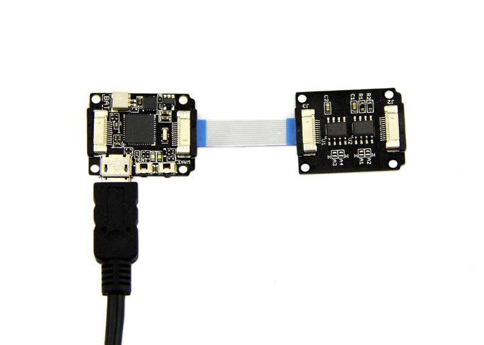

Most AVRs have a small EEPROM which can be used to save variables, configuration setting etc. Like Chip Atmega32u4 Xadow Main Board used has 1K Bytes Internal EEPROM. If you want more storage for your Xadow project, this module is designed for you! This module supplies two extra 32K byte for your project. The Xadow Storage can be powered by 3.3V. And it is compatible with Xadow system.
Two AT24C256 of Xadow Storage are sharing a common two-wire bus. Each AT24C256 has a eight-bit hardware address which is referred to as a slave address. The slave address is configured by the A2,A1 and A0 address selection inputs. The A2, A1, and A0 pins are device address inputs that are hardwired directly to GND or to VCC. If these pins are left floating, the A2, A1, and A0 pins will be internally pulled down to GND.
| Slave Address[A6 - A0] | A2,A1 and A0 inputs state | ||
|---|---|---|---|
| A2 | A1 | A0 | |
| 1010000(0x50) | GND/Floating | GND/Floating | GND/Floating |
| 1010001(0x51) | GND/Floating | GND/Floating | VCC |
| 1010010(0x52) | GND/Floating | VCC | GND/Floating |
| 1010011(0x53) | GND/Floating | VCC | VCC |
| 1010100(0x54) | VCC | GND/Floating | GND/Floating |
| 1010101(default 0x55) | VCC | GND/Floating | VCC |
| 1010110(0x56) | VCC | VCC | GND/Floating |
| 1010111(0x57) | VCC | VCC | VCC |
In default mode, one AT24C256(U1) I2C Address is 0x50 and another AT24C256(U2) I2C Address is 0x51(see the Xadow Storage).
Using the Xadow Storage, we can permanently store data even if the power is turned off. Now we show a demo: write data to storage and read it.
Hardware Installation:

Note: when connect Xadow Storage to Xadow Main Board, you should concern about the connection direction. The connection method is that the unfilled corner of one Xadow module need to connect to the right angle of another module(see four corners of each Xadow module).
The demo code:
#include <Wire.h> //I2C library
void setup()
{
char somedata[] = "this is data from the eeprom"; // data to write
Wire.begin(); // initialise the connection
Serial.begin(9600);
i2c_eeprom_write_page(0x51, 0, (byte *)somedata, sizeof(somedata)); // write to EEPROM
delay(10); //add a small delay
Serial.println("Memory written");
}
void loop()
{
int addr=0; //first address
byte b = i2c_eeprom_read_byte(0x51, 0); // access the first address from the memory
while (b!=0)
{
Serial.print((char)b); //print content to serial port
addr++; //increase address
b = i2c_eeprom_read_byte(0x51, addr); //access an address from the memory
}
Serial.println(" ");
delay(2000);
}
void i2c_eeprom_write_byte( int deviceaddress, unsigned int eeaddress, byte data ) {
int rdata = data;
Wire.beginTransmission(deviceaddress);
Wire.write((int)(eeaddress >> 8)); // MSB
Wire.write((int)(eeaddress & 0xFF)); // LSB
Wire.write(rdata);
Wire.endTransmission();
}
// WARNING: address is a page address, 6-bit end will wrap around
// also, data can be maximum of about 30 bytes, because the Wire library has a buffer of 32 bytes
void i2c_eeprom_write_page( int deviceaddress, unsigned int eeaddresspage, byte* data, byte length ) {
Wire.beginTransmission(deviceaddress);
Wire.write((int)(eeaddresspage >> 8)); // MSB
Wire.write((int)(eeaddresspage & 0xFF)); // LSB
byte c;
for ( c = 0; c < length; c++)
Wire.write(data[c]);
Wire.endTransmission();
}
byte i2c_eeprom_read_byte( int deviceaddress, unsigned int eeaddress ) {
byte rdata = 0xFF;
Wire.beginTransmission(deviceaddress);
Wire.write((int)(eeaddress >> 8)); // MSB
Wire.write((int)(eeaddress & 0xFF)); // LSB
Wire.endTransmission();
Wire.requestFrom(deviceaddress,1);
if (Wire.available()) rdata = Wire.read();
return rdata;
}
// maybe let's not read more than 30 or 32 bytes at a time!
void i2c_eeprom_read_buffer( int deviceaddress, unsigned int eeaddress, byte *buffer, int length ) {
Wire.beginTransmission(deviceaddress);
Wire.write((int)(eeaddress >> 8)); // MSB
Wire.write((int)(eeaddress & 0xFF)); // LSB
Wire.endTransmission();
Wire.requestFrom(deviceaddress,length);
int c = 0;
for ( c = 0; c < length; c++ )
if (Wire.available()) buffer[c] = Wire.read();
}
Xadow Storage eagle file
Serial EEPROM AT24C256C Datasheet